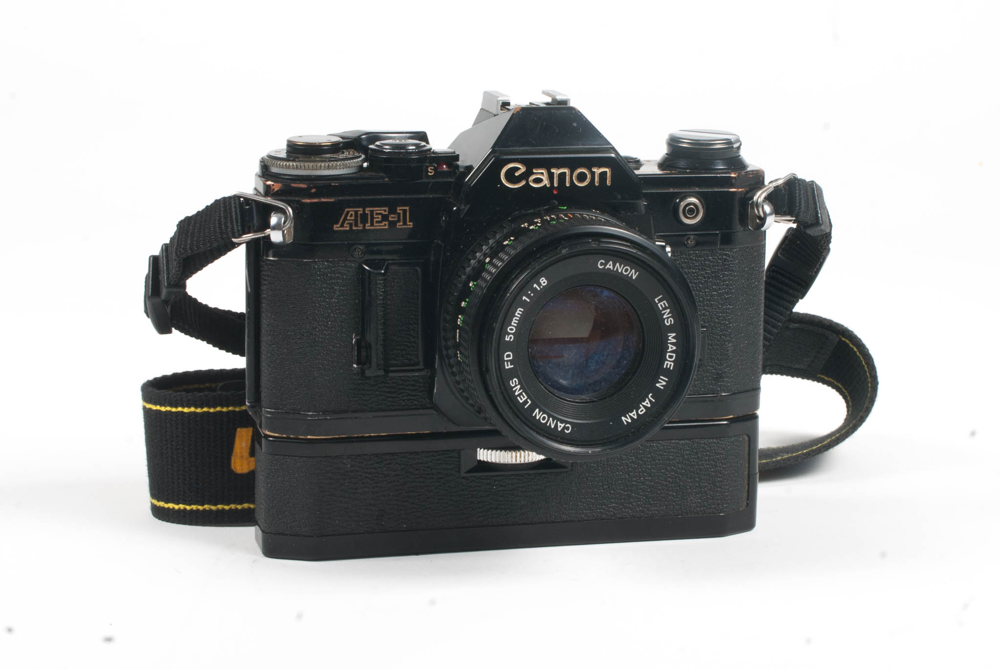
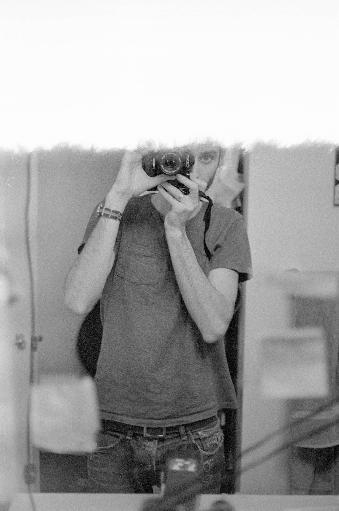
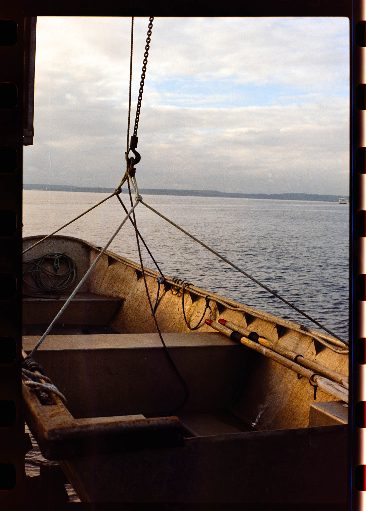
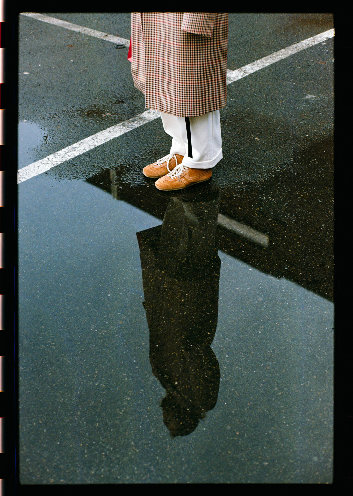
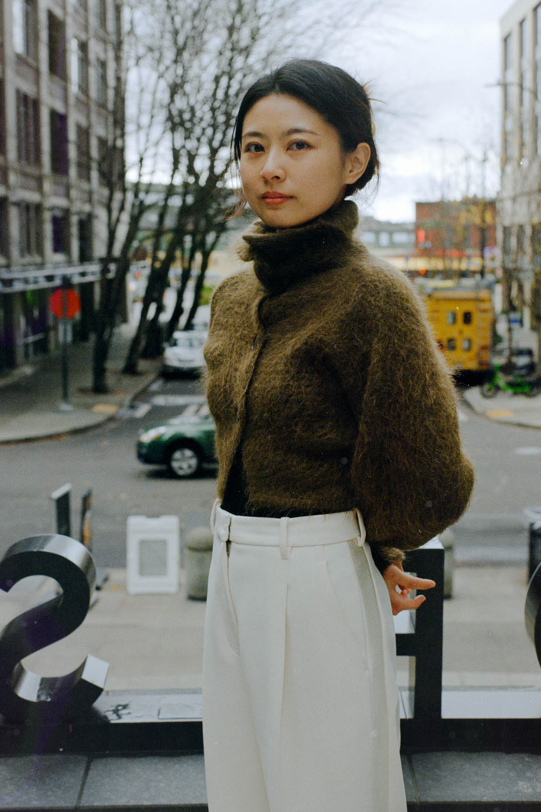
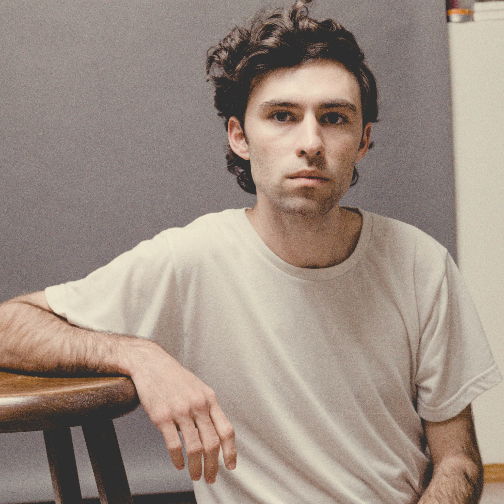
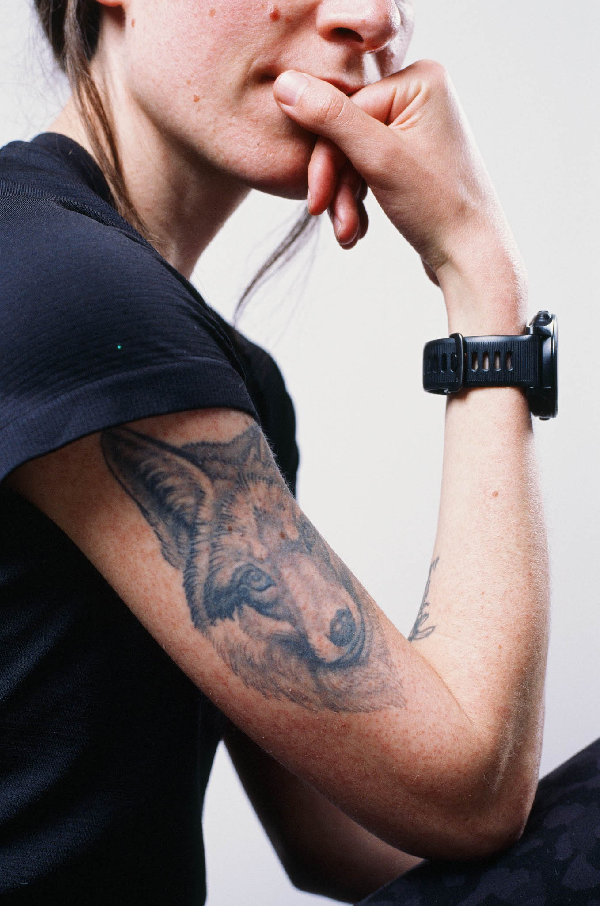
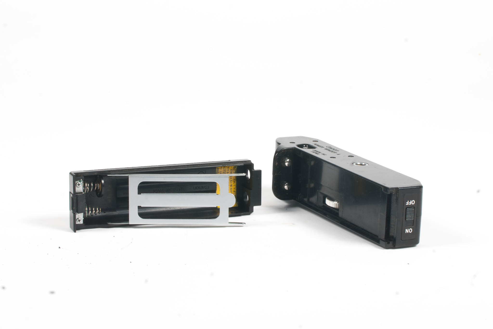

Latest Update: 5/24/26

I have a bit of a confession: I don't actually like shooting on the AE-1 all that much. It looks good, and it certainly gets a lot of attention from people wanting to talk about their own Canon cameras, but I think the actual experience of shooting leaves a lot to be desired compared to other cameras of the same era. These are just my thoughts though, I'm far from an expert. For many years, my main 35mm SLRs were a Pentax ME Super and then a Pentax Super Program, but after several shutter failures, I stepped into the modern era with a Canon EOS 7S. The AE-1, as most readers here likely know, is often recommended to beginners and intermediates just starting to learn about film photography.

On the AE-1 here are two modes of shooting: shutter priority and full manual. Perhaps it's my history of using Pentax SLRs, but even when shooting fully manual cameras, I tend to “think” in aperture priority. In low light, I open the lens all the way and use whatever shutter speed I need. On the street or in daylight, I usually pick a sharp aperture on the lens (in the middle of the range) and adjust from there if I want something different. Shutter priority is certainly better for action, but I don't shoot a lot of action on film, especially in varying light where I'd want an automatic shutter priority camera mode. All that to say—if I have to choose one, I'd prefer aperture priority over shutter priority.

In manual mode, I don't love the interface of the AE-1. It's essentially a match needle meter without the matching needle. You need to look at the display to get a suggested aperture, and then take the camera away from your face to set that suggested aperture. Perhaps if you have really memorized the camera, it's possible to do this without looking, but there are a lot of other cameras that have either a matching needle (Pentax K1000) or a window to view the aperture (Pentax MX, LX, Super Program) so it's not necessary to take your face away from the viewfinder.


It's not my daily driver, but I've left the AE-1 on my desk at work so I have a camera handy when I want to go out and shoot on my lunch break. I know this is the analog community's darling camera—maybe I'm just missing something. I'd also note that my thoughts don't apply to the AE-1 Program, or any other Canon cameras of the era like the A-1.


Incidentally, my AE-1 came with a motor winder. When the winder is on, the combo makes the super classic iPhone shutter noise, which is obviously very fun, but I don't see a huge point in winders like this. I have one for my Pentax SLRs as well, but I rarely use it because it just adds so much heft to the camera. It's only when I have a big tele lens that the combo actually feels balanced, and then the whole kit is super heavy. I had used the winder in the studio for a few shoots, but eventually it suffered an internal electronic failure and I dumped it in the trash—they're so cheap I didn't think it was worth the time to debug and attempt to fix.
